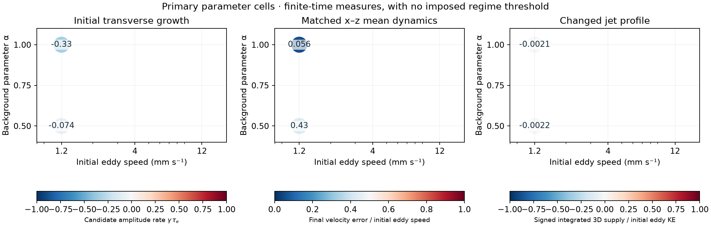
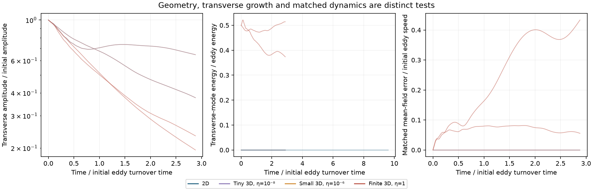
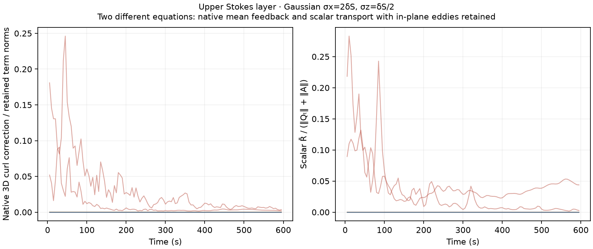
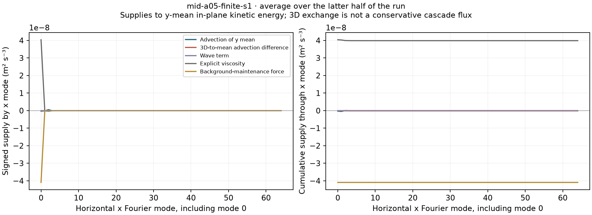
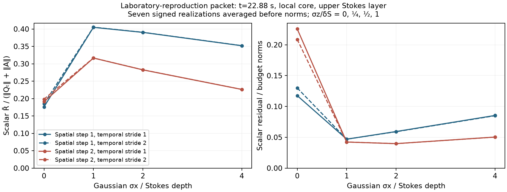

Do transverse disturbances grow?
Two tiny perturbation amplitudes test whether their scaled growth agrees before nonlinear saturation. Finite disturbances test a different question: persistence away from the exactly 2D state.
A controlled comparison across flow regimes
Follow the same turbulent initial state with and without transverse motion. Test where the two-dimensional dynamics remain useful, and where three-dimensional feedback changes the result.
49 planned calculations · Unity
9 complete · 2 running · 38 queued · 0 waiting · 0 failed
Published 2026-10-26T23:35:35.226396+00:00
Verified snapshot & definitions
Two tiny perturbation amplitudes test whether their scaled growth agrees before nonlinear saturation. Finite disturbances test a different question: persistence away from the exactly 2D state.
Compare the full x–z velocity and vorticity fields with the matched 2D run. Track the jet profile separately, so the test retains the in-plane eddies that generate jets.
Measure signed effects on the mean dynamics and transfer between horizontal scales. Energy geometry, small-scale correction norms and jet evolution are assessed separately.
Completed, verified results




These tests quantify how 3D coupling modifies the proposed jet-forming dynamics. Reynolds-stress transport and vortex-wave dynamics are coupled parts of that description. A large instantaneous correction does not by itself show that the jet mechanism changes.
A common diagnostic, a different physical setting
The laboratory-reproduction packet is shown using the same scalar equation and Gaussian filter widths measured in Stokes depths. It is transient, has different boundaries and initial turbulence, and has no matched autonomous 2D run in this dataset.
Packet diagnostics, windows and provenance

| Filter | Spatial derivative step | R̄ / evolution | Residual / budget |
|---|---|---|---|
| g1 | 1 | 0.405 | 0.0469 |
| g2 | 1 | 0.39 | 0.0593 |
| g4 | 1 | 0.352 | 0.0854 |
| unfiltered | 1 | 0.176 | 0.118 |
| g1 | 2 | 0.316 | 0.0423 |
| g2 | 2 | 0.283 | 0.0397 |
| g4 | 2 | 0.226 | 0.0504 |
| unfiltered | 2 | 0.191 | 0.226 |
Individual calculations
| Run / diagnostic data | Status | Eddy speed (mm s⁻¹) | α | Initial 3D / 2D energy, η | Final time (s) |
|---|---|---|---|---|---|
| low-a05-2d-s1 | complete | 1.2 | 0.5 | 0 | 600.0 |
| low-a05-tiny-s1 | complete | 1.2 | 0.5 | 1e-06 | 600.0 |
| low-a05-tiny100-s1 | complete | 1.2 | 0.5 | 1e-08 | 600.0 |
| low-a05-finite-s1 | complete | 1.2 | 0.5 | 1 | 600.0 |
| low-a1-2d-s1 | complete | 1.2 | 1.0 | 0 | 600.0 |
| low-a1-tiny-s1 | complete | 1.2 | 1.0 | 1e-06 | 600.0 |
| low-a1-tiny100-s1 | complete | 1.2 | 1.0 | 1e-08 | 600.0 |
| low-a1-finite-s1 | complete | 1.2 | 1.0 | 1 | 600.0 |
| mid-a05-2d-s1 | complete | 4 | 0.5 | 0 | 600.0 |
| mid-a05-tiny-s1 | running | — | — | — | — |
| mid-a05-tiny100-s1 | running | — | — | — | — |
| mid-a05-finite-s1 | queued | — | — | — | — |
| mid-a1-2d-s1 | queued | — | — | — | — |
| mid-a1-tiny-s1 | queued | — | — | — | — |
| mid-a1-tiny100-s1 | queued | — | — | — | — |
| mid-a1-finite-s1 | queued | — | — | — | — |
| high-a05-2d-s1 | queued | — | — | — | — |
| high-a05-tiny-s1 | queued | — | — | — | — |
| high-a05-tiny100-s1 | queued | — | — | — | — |
| high-a05-finite-s1 | queued | — | — | — | — |
| high-a1-2d-s1 | queued | — | — | — | — |
| high-a1-tiny-s1 | queued | — | — | — | — |
| high-a1-tiny100-s1 | queued | — | — | — | — |
| high-a1-finite-s1 | queued | — | — | — | — |
| anchor-2d-s1 | queued | — | — | — | — |
| anchor-tiny-s1 | queued | — | — | — | — |
| anchor-tiny100-s1 | queued | — | — | — | — |
| anchor-finite-s1 | queued | — | — | — | — |
| low-a1-2d-s2 | queued | — | — | — | — |
| low-a1-tiny-s2 | queued | — | — | — | — |
| low-a1-finite-s2 | queued | — | — | — | — |
| high-a05-2d-s2 | queued | — | — | — | — |
| high-a05-tiny-s2 | queued | — | — | — | — |
| high-a05-finite-s2 | queued | — | — | — | — |
| anchor-wide-2d-s1 | queued | — | — | — | — |
| anchor-wide-tiny-s1 | queued | — | — | — | — |
| anchor-wide-finite-s1 | queued | — | — | — | — |
| anchor-fine-2d-s1 | queued | — | — | — | — |
| anchor-fine-tiny-s1 | queued | — | — | — | — |
| anchor-fine-finite-s1 | queued | — | — | — | — |
| anchor-halfdt-2d-s1 | queued | — | — | — | — |
| anchor-halfdt-tiny-s1 | queued | — | — | — | — |
| anchor-halfdt-finite-s1 | queued | — | — | — | — |
| anchor-nowaves-2d-s1 | queued | — | — | — | — |
| anchor-nowaves-tiny-s1 | queued | — | — | — | — |
| anchor-nowaves-finite-s1 | queued | — | — | — | — |
| anchor-re300-2d-s1 | queued | — | — | — | — |
| anchor-re300-tiny-s1 | queued | — | — | — | — |
| anchor-re300-finite-s1 | queued | — | — | — | — |
Each completed run links to its regional, filtered diagnostic table. Its folder also contains regime-budget.csv, jet-budget.csv, mode-supply.csv and summary.json.
The background is UE=−αus, UL=(1−α)us, with us=S exp(2kz). The initial Eulerian vorticity profile q0(z)=−αu′s(z) remains explicit. Thus α changes both the background current and its vorticity; it is not merely a rotation-rate switch.
In the no-wave controls, the same initial Eulerian current is preserved, the actual Stokes drift is zero and UL0=UE0. The reference drift profile still defines the imposed background; q0 is not reset to zero.
The main grid varies initial eddy speed and α at a specified initial Reynolds number. An explicit viscosity and compensating background force maintain the prescribed mean state in the absence of disturbances. Turbulent departures remain freely evolving. Width, viscosity, grid, time-step and no-wave checks are shown alongside the primary cells.
Matched members share the base initial field, physical parameters, grid and time-step cap. Adding finite 3D perturbations adds energy; this comparison does not claim equal total initial energy. Initial Reynolds and turnover measures evolve as the turbulence changes.
For each realization, the autonomous mean comparison evaluates the numerical advection on the actual y-mean field and compares its curl with the averaged full-flow advection. Wave, viscous and background-force terms stay in the retained equation. The difference measures the native 3D feedback on that mean field.
The scalar comparison instead evaluates Qt+A=R̄3D plus viscous and forcing curls, with Q=meanyq and A=meany(u qx+w qz). In-plane eddy transport remains in A. R̄3D is not the native full-minus-mean correction. Averaging in y is performed before any ensemble averaging.
Signed terms are formed before Gaussian filtering and before taking norms. Filters use (σx,σz)/δS=(0,0),(1,¼),(2,½),(4,1), with δS=1/(2k). Kernels are nonperiodic, truncated at four σ, and normalized by physical quadrature. Boundary truncation and retained depths are included in the data.
The horizontal spectra describe supplies into the y-mean in-plane kinetic energy, resolved by x wavenumber and including the mean mode. The 3D contribution exchanges energy with transverse motions; its cumulative supply is not automatically a conservative inverse-cascade flux. Vertical boundaries also preclude interpreting this as an isotropic shell spectrum.
Temporal derivatives use saved mean maps, with two centered temporal strides. Fresh numerical tendencies are evaluated at the saved state. Reported residuals include temporal quadrature, diagnostic interpolation and spatial differences; they are not labelled pure physical dissipation or adjusted to force closure.
Individual trajectories can separate chaotically even when their statistics agree. These are finite-time assays with limited seed checks. No single frequency/turnover ratio, transverse-energy fraction or correction norm assigns a regime, proves asymptotic stability, or establishes a tracer-mixing barrier.